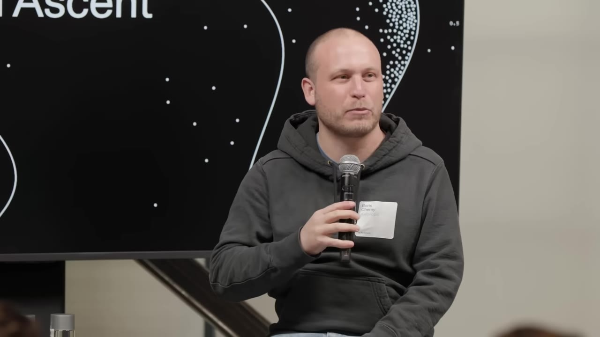
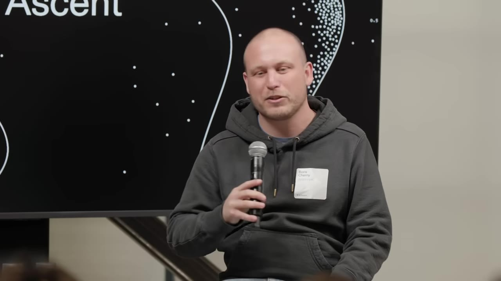
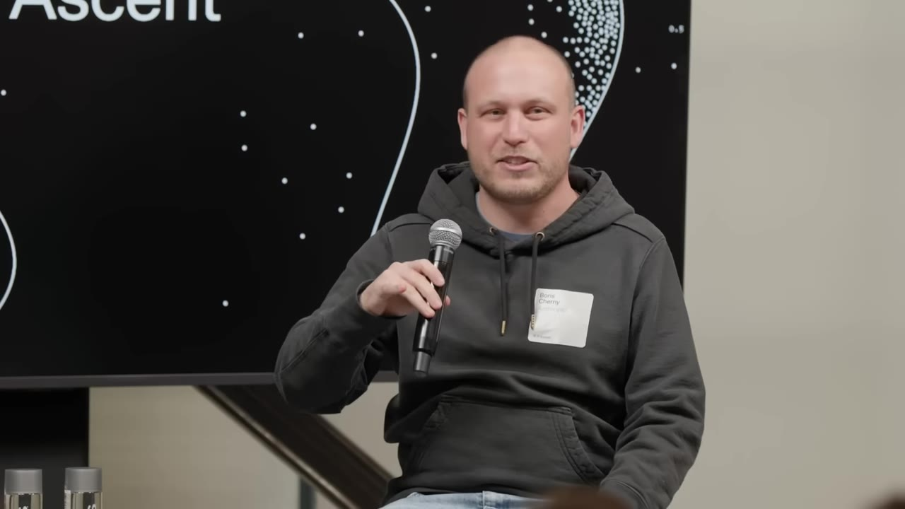
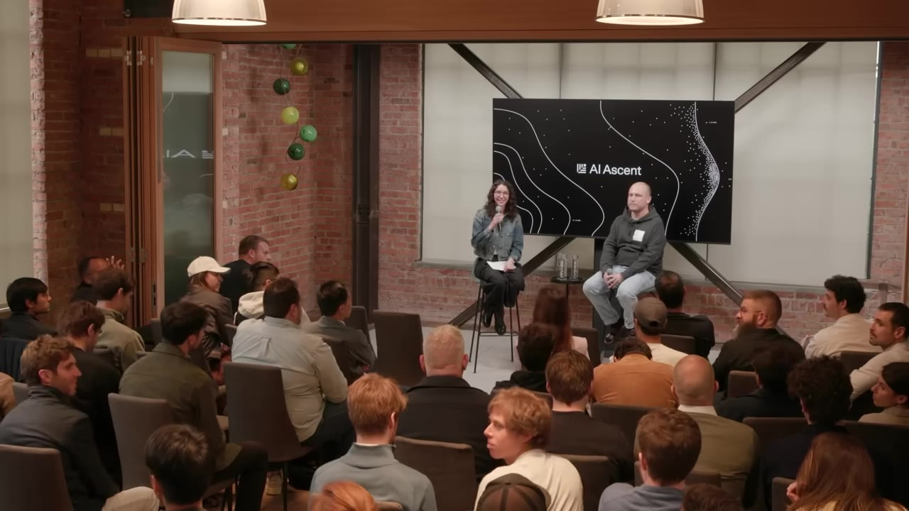
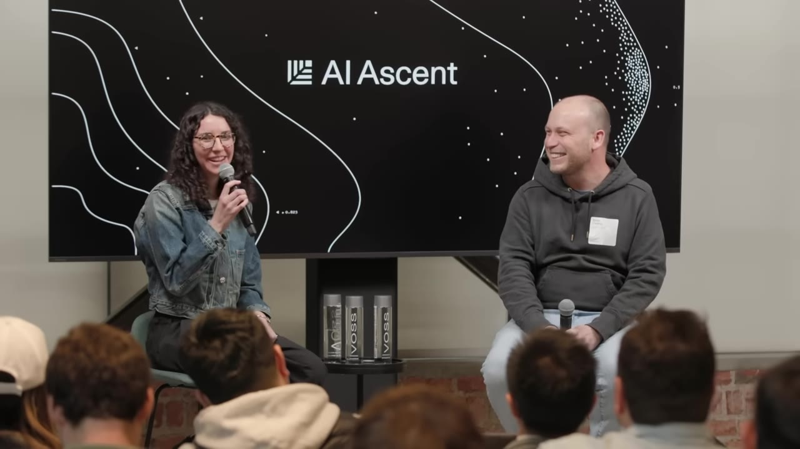
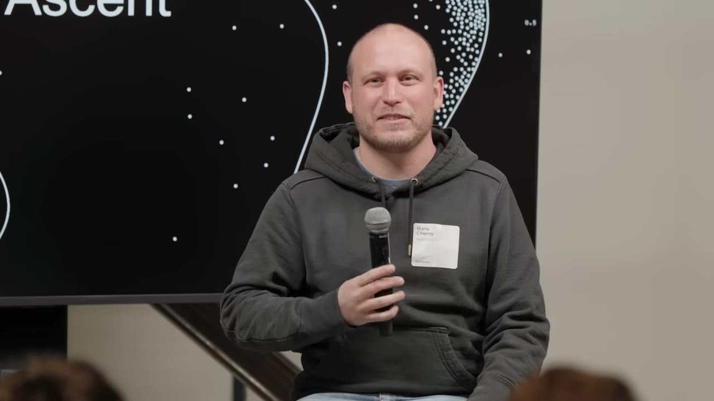
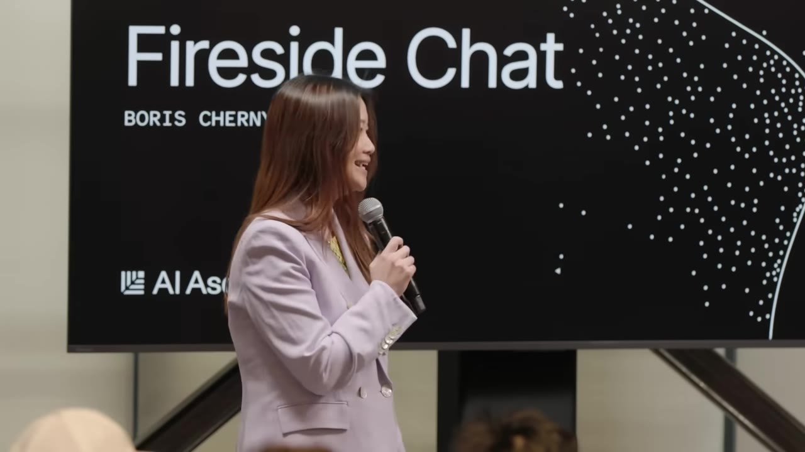

The creator of Claude Code on why he hasn't written a line of code in 2026, why coding is "solved" for him, and what a printing-press-scale shift does to teams, startups, and software itself.
Watch on YouTubeClaude Code came out of Anthropic Labs, a small incubator team Boris joined in late 2024 — the same group that shipped MCP and the desktop app. The premise was a "product overhang": the model could already do things no product had captured. In late 2024 the state of the art in coding was type-ahead — open your IDE, press tab, complete one line. Sonnet 3.5 had just made that work. The bet was that the model was nearly ready to skip type-ahead entirely and write all the code itself.

We were trying to build this thing that was pre-PMF, and we knew it wouldn't have PMF for six months because we were building for the next model.— Boris Cherny
For the first six months it barely worked — Boris used it for maybe 10% of his code. Even at launch it wasn't a hit. The exponential growth started with Opus 4 in May, and re-inflected with every release after: 4.5, 4.6, 4.7.
Boris's answer to "is coding solved" is unambiguous for himself: it's 100%. The model writes all of his code, and has since roughly October or November of last year. The Claude Code codebase — which leaked, so it's no secret — is just TypeScript and React. That choice was deliberate: early on, when the model was weaker, picking a language and framework "on distribution" mattered a lot. Today the model can pick up languages and frameworks it hasn't seen.

Most of Boris's work now happens on his phone, through the Claude app's code tab — typically five to ten sessions running at once, each with a batch of agents underneath. A few hundred agents during the day, a few thousand overnight doing deeper work.

The tool he keeps coming back to is /loop: Claude uses cron to schedule a recurring job — every minute, every few minutes, every day. He runs dozens of them.
One loop fixes CI and auto-rebases his open pull requests.
Another watches for flaky tests and goes and fixes them.
A third pulls feedback off Twitter and clusters it for him every 30 minutes.
I sort of feel like loops are the future at this point.— Boris Cherny
Anthropic also just launched routines — the same idea, but running on the server, so it keeps going after you close your laptop.
Boris's prediction for teams: many more generalists, and increasingly cross-disciplinary ones. Today a generalist usually still means an engineer who spans iOS, web, and server. What he sees coming is generalists who are strong in product engineering and design, or product and data science and engineering at once.

Asked whether cheaper code means a "SaaS apocalypse," Boris reaches for the Acquired podcast's framing of Hamilton Helmer's seven powers. His read: AI weakens some moats and leaves others intact. Switching costs erode — you can use the model to port from one tool to another. Process power erodes too, because Claude is getting good at figuring out process; with 4.7 you can hand it a target and tell it to iterate until done.

The second shift: he expects the number of startups that "disrupt everything" to rise roughly 10x over the next decade. A tiny startup can now build something as valuable as a large company and compete head-to-head — because the incumbent has to evolve its processes, retrain its people, and fight internal resistance, while a fresh team can build AI-native from the ground up.
It's the best time to build. It's the best time to be a startup. There's so much disruption coming.— Boris Cherny
Boris's clearest historical parallel is the printing press in 1400s Europe. Before it, about 10% of Europeans were literate — often employed to read and write for kings and lords who couldn't. In the 50 years after the first press, more was published in Europe than in the prior thousand years, and the cost of a book fell roughly 100x. Literacy eventually climbed toward 70% globally — though it took a couple hundred years and required schools and governments.

A corollary he draws: the best person to write accounting software is a great accountant, not an engineer — because the domain is the hard part and the coding is the easy part.
You don't need a degree in reading and writing to know how to read and write. Although still there are professional writers.— Boris Cherny
Pressed for the shape of a product he'd build today that gets more interesting as models improve in 6–12 months, Boris points to Claude design — already decent, about to get much better — plus more Claude Code launches landing in the coming weeks, and the broader push around massively parallelizing agents through loop and batch. Computer use is the other one he keeps naming: slow today, but with 4.7 it can drive nearly any piece of software on your machine, and Anthropic believes it's well ahead there.
